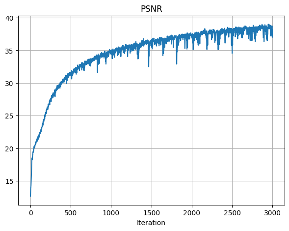
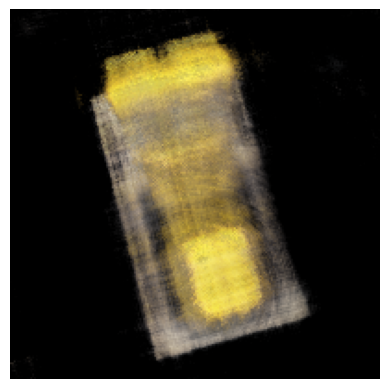
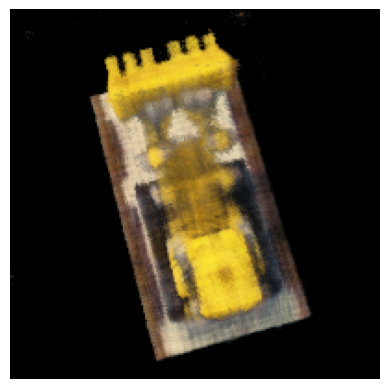
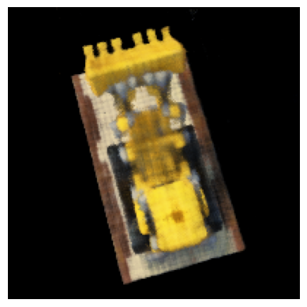
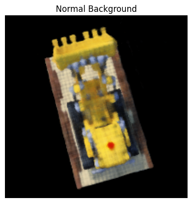
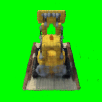

Final Project - Neural Radiance Field!
Part 1: Fit a Neural Field to a 2D Image
Overview
In this first part of the project, I implemented an 2D Neural Field by making an MLP.
Architecture
For the architecture of the MLP, I implemented exactly what was described in the project spec.
I used nn.Sequential() to connect the layers up, where I had, as specified in the spec, 4 Linear layers with 3 ReLU activation layers in between.
The last is a Sigmoid layer, which outputs the rgb values.
I implemented Sinusoidal Positional Encoding by looping through L times to find each corresponding sinusoidal value.
For the hyperparameters chosen, I had learning rate of 1e-2 and L = 15.
I used the recommended values for all other parameters, such as training the model for 3000 iterations in total, batch size of 10,000, and using the Adam optimizer.
After training, the final PSNR achieved was 26.86.
Below is the PSNR training graph across iterations:
Visualization
I also plotted the predicted images across iterations, which were similar to the reference images from the spec.
As shown, the images get more and more close to the original image, as the iterationi increases.
Below are the images for visualizing the training process:
Original Image

Hyperparameter Tuning
I did a bit of hyperparameter tuning to try to find best values for yielding the best PSNR results.
The two parameters I chose to vary are learning rate and max frequency L for the positional encoding.
For L, I tried values 5, 10, 15, 20, 25.
It appears that PSNR improves as L increases from 5 to 15, but then it falls back down after L increases up to 25.
So, I chose L = 15 as the best value.
For learning rate, I chose values 0.1, 0.01, 0.001, 0.0001, and 0.00001.
Similarly for lr, PSNR appears to improve as lr decreases from 0.1 to 0.001, but then PSNR begins to get worse as lr decreases further to 1e-5.
So, I chose lr = 0.001 to produce the best PSNR results.
Below are the graphs for the PSNR results after playing around with each parameter:
Different Image
I used an image of a cute puppy to play around with the model some more.
I used the same parameters found previously, where lr = 0.001 and L = 15.
For the final image, the PSNR achieved was 38.13.
Below are the images for this image's PSNR curve and the visualized images as the model is trained:
PSNR across Iterations

Part 2: Fit a Neural Radiance Field from Multi-view Images
Overview
In this part, I implemented the NeRF paper from scratched.
For extra credit, I also modified it to injected background colors, where I chose green.
I simply downloaded the npz file for the input data, and I followed the suggested architecture and math equations provided in the spec to implement this part.
Part 2.1: Create Rays from Cameras
I implemented this part by following the information given in the project spec and fall 23's lecture slides for NeRF.
I first implemented transform(c2w, x_c) to convert the 3D points from a camera coordinate system to the world coordinate system.
Then, I implemented pixel_to_camera(K, uv, s) to convert a 2D pixel coordinate to the 3D camera coordinate.
Finally, I used the previous two functions to implement pixel_to_ray(K, c2w, uv), where this function converts pixel coordinates to a ray's origin and direction.
Part 2.2: Sampling
I continued to implement sampling rays from images and sampling points along rays for this part.
I made RaysData.sample_rays(), which would, given indices or randomly choose itself, find the world frame information for rays_o and rays_d and its color.
I also implemented sample_along_rays, which samples 3D points along a ray in space.
For this function, I also added the option to add small random offsets to each sample in order to perturb them with Gaussian noise.
Part 2.3: Putting Dataloading Together
For this part, I ran and passed the provided test scripts from the project spec.
I also included both complete test scripts in my jupyter notebook, so run either accordingly to show the 3D visualizations of the images.
Below is the visualization of the ray sampling for all cameras from the npz file and the ray sampling for a single camera, limited to 100 rays:
Part 2.4: Neural Radiance Field
I followed the exact architecture provided for this part of the project from the project spec.
I also reused the positional encoding code from the first part of the project.
Overall, I chose the same parameters as suggested in the spec.
I used L=4 to have less frequency PE, and I had L10 for the coordinate PE.
Based on the suggested architecture, the NeRF, compared to the first part's MLP, is much more deep, where there are more Linear and ReLU layers chained together.
And, as NeRF needs to produce more results to yield a 3D image, this architecture also produces the density result, which will specify how strong the color for the ray will be.
Part 2.5: Volume Rendering
For this part, I implemented volrend() based on the provided equations in the project spec.
However, I modified the equation a bit in order to inject a background color for the bells and whistles part of this project.
In order to do this, I just had to add the logic for detecting when a ray is never hitting something when rendering a frame.
So, if a ray isn't hitting anything, as described in T, then that ray should instead be given the background color.
To inject the background color, I simply checked whether this option was enabled or not, and then I multiplied that color with values in T and added it to the originally calculated color of that ray.
I also ran the provided test script to check my volrend() implementation, which passed.
I included the script in the according cell in my notebook for convenience.
When running my model, I set lr = 7e-4.
I had the other parameters set as the recommended values, such as batch size as 10000.
I also had the model run for 1600 iterations.
The final PSNR for training is 24.78, and the final PSNR for validation is 24.07.
Below are the PSNR curves for training and validation:
I also visualized the training process by outputing the predicted images across images, which appeared similar to the reference images from the project spec.
Below are the images across the iterations of training:
Iter 200

PSNR: 19.94
Iter 600

PSNR: 22.34
Iter 1000

PSNR: 23.45
Iter 1600

PSNR: 24.78
Finally, I rendered a novel view of the image.
Because my PSNR achieved was 24.07 for validation, it has already passed the 23 PSNR cutoff as mentioned in the project spec.
Below are a single view and a spherical rendering of the lego build spinning around:
Bells and Whistles: Extra Credit
As described above, I rendered the Lego video with a different background color by injecting it into volrend().
I chose the color green, as there are no green pixels in any of the camera images.
Below are the results to compare the original renderings with the new background-injected renderings:
Green Background Spherical View

Reflection
I thought this project was the most cool from this semester.
Initially, it was very difficult to understand the concepts, as we didn't go as in-depth for these NeRF-related concepts in this semester's lecture.
However, I felt like the previous project for diffusion models helped me learn how to digest a paper and online documentation for pytorch more quickly.
Lego is still my hobby, so seeing my final rendered video was really satisfying.